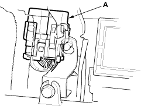

- Turn the ignition switch OFF.
- Inspect the No. 6 ECU (ECM) (15A) fuse in the under-hood fuse/relay box.
Is the fuse OK?
YES - Go to step 29.
NO - Go to step 23.
- Remove the blown No. 6 ECU (ECM) (15A) fuse in the under-hood fuse/relay box.
- Remove the PGM-FI main relay 1 (A).
LHD model:

RHD model:


- Check for continuity between body ground and the PGM-FI main relay 14P connector terminals No. 2 and No. 4 individually.

Is there continuity?
YES - Repair short in the wire between the No. 6 ECU (ECM) (15A) fuse and the PGM-FI main relay 1. Also replace the No. 6 ECU (ECM) (15A) fuse. 
NO - Go to step 26.
- Disconnect each of the components or the connectors below, one at a time, and check for continuity between the PGM-FI main relay 1 4P connector terminal No. 1 and body ground.
- PGM-FI main relay 2
- ECM connector A (31P)
- Each injector 2P connector
- Idle air control (IAC) valve 3P connector
- Top dead centre (TDC) sensor 3P connector
- Crankshaft position (CKP) sensor 3P connector